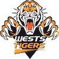
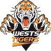

Interesting History
1907 - NSW Rugby League began
1908 - First Club formed (Glebe), then Souths, Easts, Newtown, Balmain, Wests, Newcastle and Cumberland. First Premiership games played in NSW. NSW wins first interstate game v QLD. Souths win 1st premiership.First Kangaroo tour.
1913 - Rugby League played in Sydney Schools
1916 - Interstate football suspended due to war (resumed 1919)
1920 - First edition of The Rugby League News published
1922 - First QLD win over NSW
1924 - First radio broadcast of Rugby League
1942 - Interstate football suspended due to war (resumed 1945)
1957 - Australia hosts 1st Rugby League World Cup
1961 - 1st televised game
1965 - Souths win 10th consecutive Premiership
1977 - 1st drawn Grand Final (Souths v Parramatta)
1979 - 1st night Rugby League match played at SCG
1991 - Tobacco Advertising Prohibition Bill passes parliament, ending cigarette-compnay sponsorhip of sports
1995-1997 - Super League War
1998 - National Rugby League Formed
2001 - Telstra become 1st major sponsor
2007 - NRL grows to 16 teams, Gold Coast joining
2009 - Two referees introduced for NRL matches
2014 - South Sydney win their 21st premiership
2015 - First ever all QLD Grand Final, Cowboys defeat Broncos
Team Premierships
Sydney Roosters 15
St George Dragons 15
Balmain Tigers 11
Manly-Waringah Sea Eagles 8
Canterbury-Bankstown Bulldogs 8
Brisbane Broncos 6
Western Suburbs Magpies 4
Parramatta Eeels 4
Newtown Jets 3
Melbourne Storm 3
Canberra Raiders 3
North Sydney Bears 2
Penrith Panthers 2
Newcastle Knights 2
Nth Queensland Cowboys 1
St George Illawarra Dragons 1
West Tigers 1